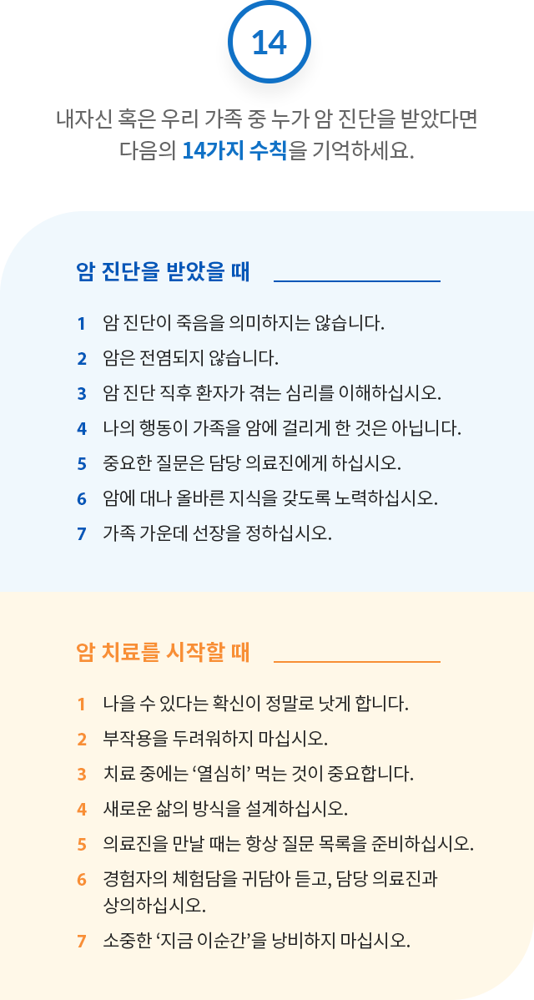

내자신 혹은 우리 가족 중 누가 암 진단을 받았다면 다음의 14가지 수칙을 기억하세요.
암 진단을 받았을 때
1.암 진단이 죽음을 의미하지는 않습니다.
2.암은 전염되지 않습니다.
3.암 진단 직후 환자가 겪는 심리를 이해하십시오.
4.나의 행동이 가족을 암에 걸리게 한 것은 아닙니다.
5.중요한 질문은 담당 의료진에게 하십시오.
6.암에 대한 올바른 지식을 갖도록 노력하십시오.
7.가족 가운데 선장을 정하십시오.
암 치료를 시작할 때
1.나을 수 있다는 확신이 정말로 낫게 합니다.
2.부작용을 두려워하지 마십시오.
3.치료 중에는 ‘열심히’ 먹는 것이 중요합니다.
4.새로운 삶의 방식을 설계하십시오.
5.의료진을 만날 때는 항상 질문 목록을 준비하십시오.
6.경험자의 체험담을 귀담아 듣고, 담당 의료진과 상의하십시오.
7.소중한 ‘지금 이순간’을 낭비하지 마십시오.